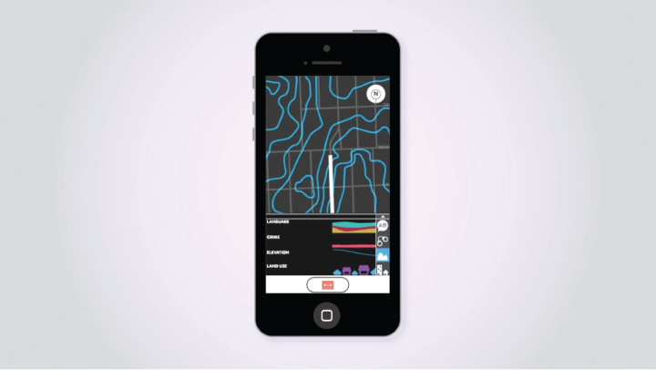

CALLIOPE
is a GIS-based music-generating app that allows users to experience their surrounding environment by its geographical datasets. Using GPS tracking, as the user travels, Calliope utilizes geographic data such as language, elevation, crime rate and land use about the surrounding area. It also generates music based on each dataset. This project was a team effort collaborating with Thao Le and Remo Bang.
